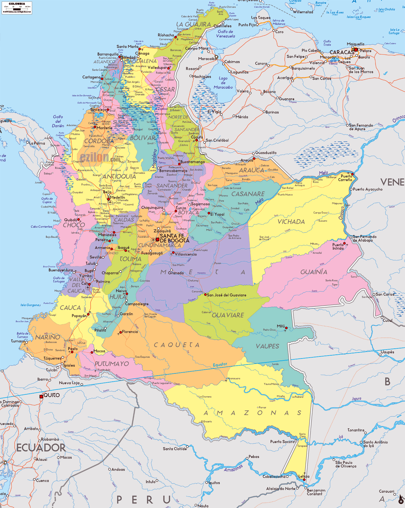
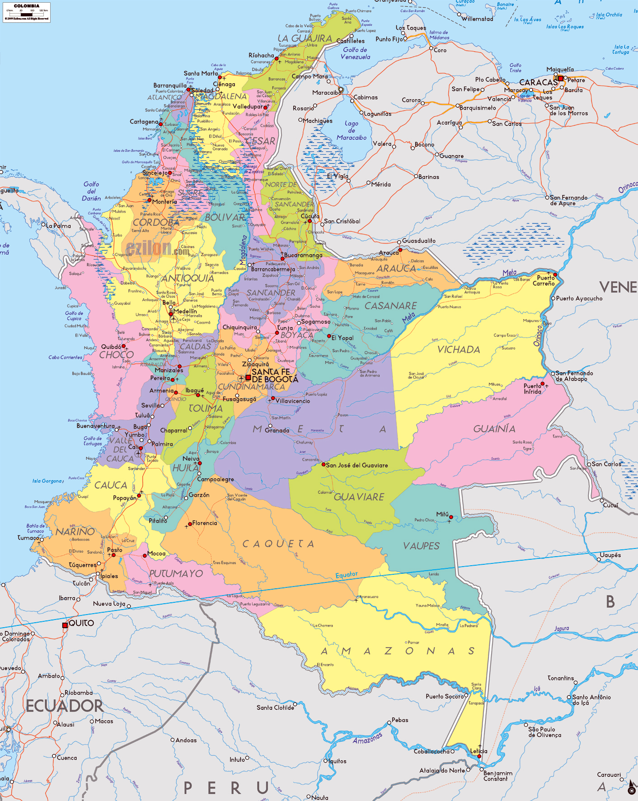
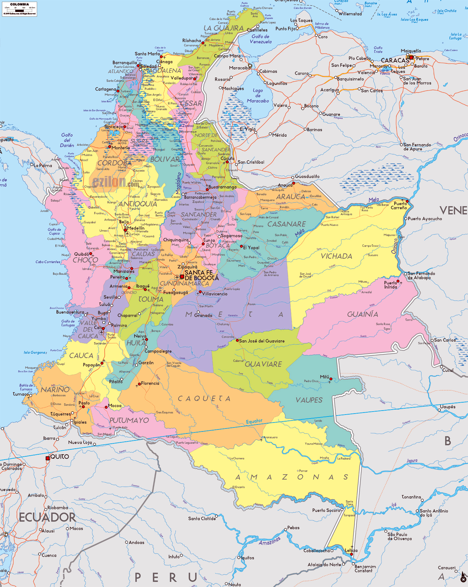
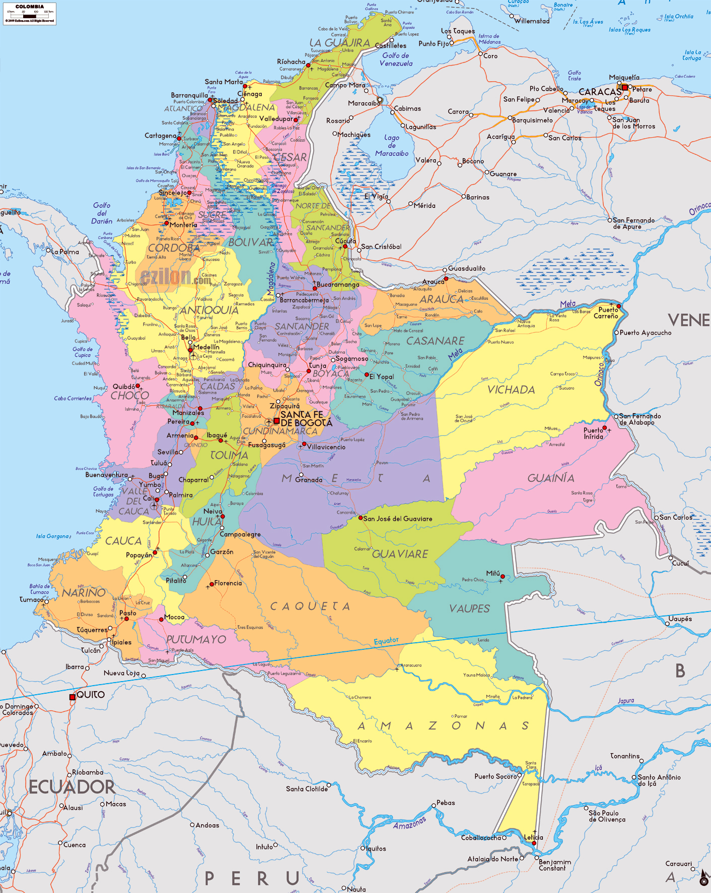
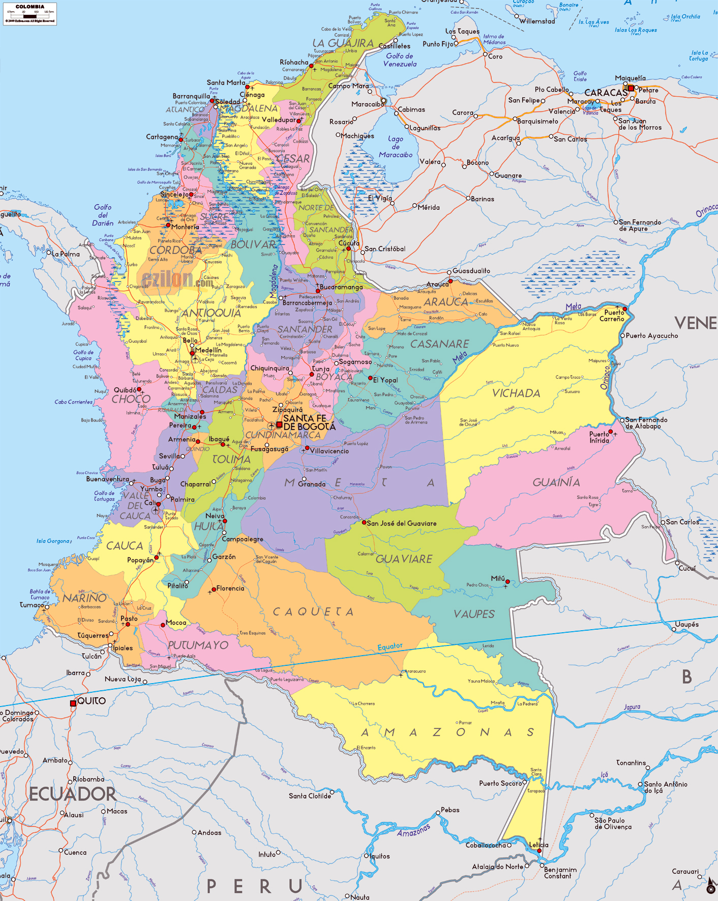

Home
About
Geographic Processes
References
Earth’s Internal Processes
Plate tectonics: Colombia sits on the boundary of the South American and Nazca plates, causing earthquakes and volcanic activity.
Earth’s External Processes
Weathering and erosion shape the Andes and river valleys.
Rainfall patterns and climate influence vegetation and agriculture.
Interactive Maps of Colombia
Ancient Map
Modern Political Map
Latitude & Longitude
Trade Routes


 

 
